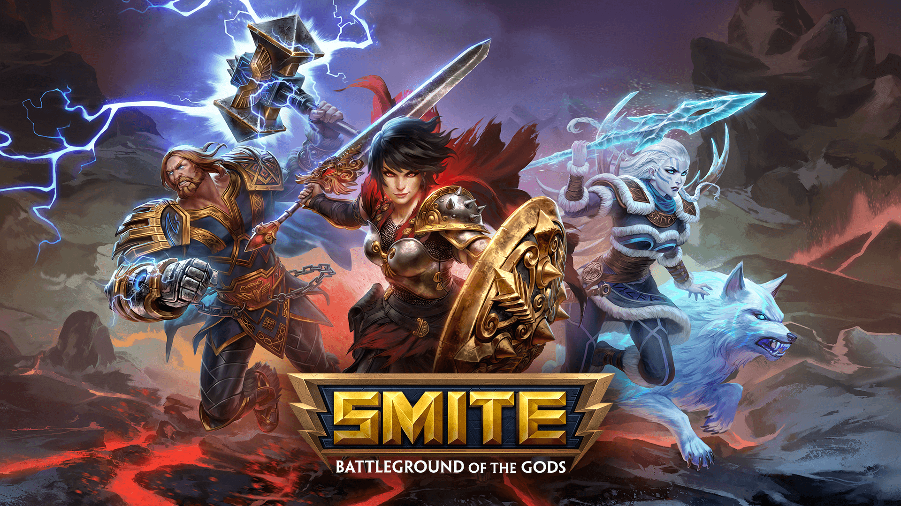
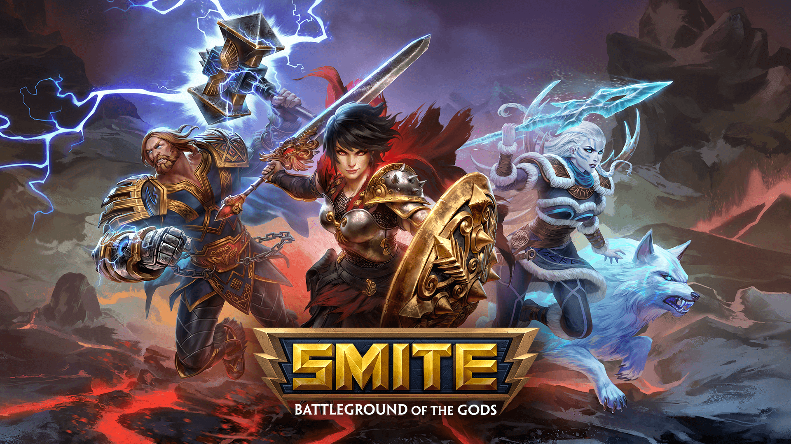

For Honor es un videojuego de acción en tercera persona que destacó por su sistema de combate tridireccional. Ha sido desarrollado por Ubisoft Montreal y distribuido por Ubisoft para las plataformas Microsoft Windows, PlayStation 4 y Xbox One. Fue anunciado oficialmente en el E3 de 2015 y salió a la venta el 14 de febrero de 2017. El juego se centra en el combate medieval y consta de cuatro1 facciones a las cuales los jugadores podrán escoger entre caballero, samurai o vikingo.
 
